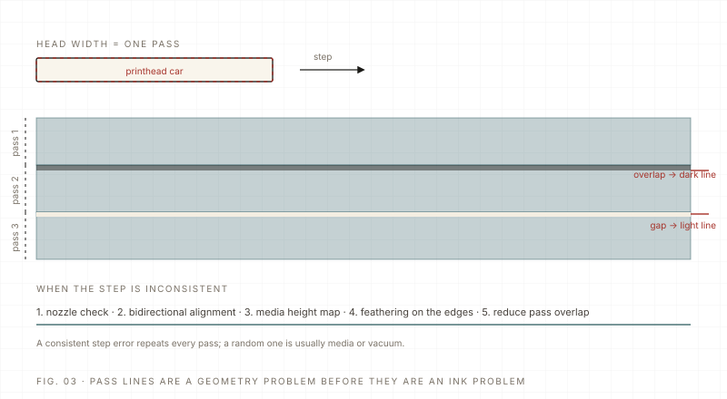

Maintenance Intermediate 6 min read Updated 2026-11
Pass lines and banding: find the cause before you touch the profile
Pass lines are a registration error, not a colour error. A mechanical machine always has some error; the job is to keep it below the visible threshold. Nozzle check, alignment, feathering and step — in that order.
The short answer: banding is a spacing problem. Every swath of the head has to land exactly next to the previous one; when it lands too close the overlap darkens, when it lands too far apart a light line appears. On a real machine the error is never zero — the goal is to keep it under the level the eye can see, and to fix the cause rather than hide it with a heavier ink limit.
The usual suspects, in order of likelihood
| Cause | Symptom | First fix |
|---|---|---|
| Feathering too low | Uniform fine lines at every swath, worse on gradients | Raise feathering in the RIP and test on a solid patch |
| Bidirectional alignment off | Lines differ between left-to-right and right-to-left passes | Re-run bidirectional alignment at the current media height |
| Step (feed) too small or too large | A dark or light band at every swath boundary | Calibrate media feed; check the Y belt and roller tension |
| Nozzle deflection / dropout | One thin line, sometimes interrupted, with ink mist nearby | Nozzle check and clean; replace the head if it persists |
| Media height variation | Wavy banding that follows the surface, not the swath | Re-measure at the highest point; flatten or vacuum the media down |
| Too few passes for the resolution | Banding only in dense solids at high speed | Increase passes, lower speed, and re-check the deadline |

A five-minute diagnostic routine
- Print the nozzle check and look at it at an angle under a lamp; count missing or deflected nozzles.
- Print a solid patch at the same resolution and pass count as the failing job.
- If every swath shows a line, test feathering and step before touching alignment.
- If left-to-right and right-to-left differ, do the bidirectional alignment at the real head height.
- If a single line appears, clean and re-check that head before reprinting.
- Log the head height, alignment result and media batch with the job.
One habit prevents most of this: print the test line before the first job of the day, and record head height whenever the media changes. Banding that appears after a media change is almost always a height or feed problem, not a head problem.
Finally, keep banding and streaking separate. Banding is regular and travels with the head; streaking is intermittent and directionless, usually a slightly blocked nozzle or an ink-flow problem. The two have different diagnostic orders — do not force one checklist onto both.